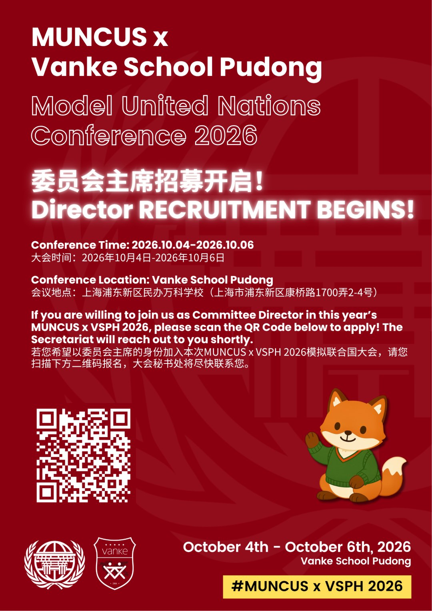
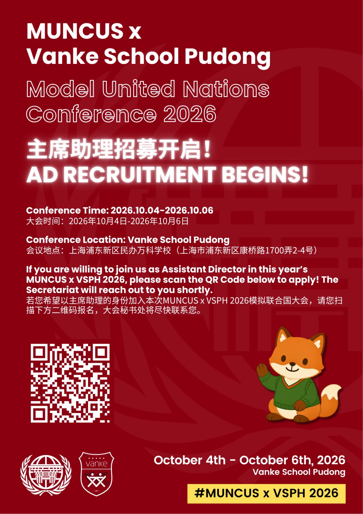

Conference Time: October 4 – 6, 2026 大会时间：2026年10月4日 – 2026年10月6日
Conference Location: Vanke School Pudong 会议地点：上海浦东新区民办万科学校（上海市浦东新区康桥路1700弄2-4号）
Committee Director Recruitment
If you are willing to join us as a Committee Director at this year's MUNCUS x VSPH 2026, apply and the Secretariat will reach out to you shortly.
若您希望以委员会主席的身份加入本次 MUNCUS x VSPH 2026 模拟联合国大会，欢迎报名，大会秘书处将尽快联系您。

Assistant Director Recruitment
If you are willing to join us as an Assistant Director at this year's MUNCUS x VSPH 2026, apply and the Secretariat will reach out to you shortly.
若您希望以主席助理的身份加入本次 MUNCUS x VSPH 2026 模拟联合国大会，欢迎报名，大会秘书处将尽快联系您。

Dais recruitment for MUNCUS x VSPH 2026 has closed. Meet the selected dais team in our September 30 announcement.
About MUNCUS
上海模拟联合国社团联盟（MUNCUS）致力于连接上海地区模联社团，搭建资源共享与交流平台，为更多青少年提供与世界交流的机会。
The Model United Nations Club Union of Shanghai connects MUN clubs across Shanghai, building a platform for sharing resources and exchange, and giving more young people the chance to engage with the world.
To inspire the next generation.
Originally published on the MUNCUS WeChat official account. Read on WeChat →